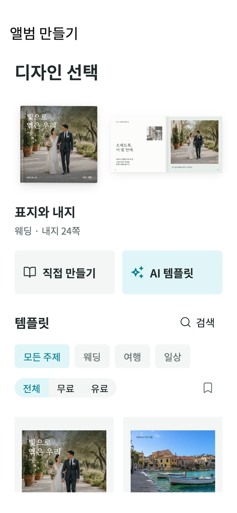

SnapFit 앨범 제작 여정
제작 방식 선택 → 앨범 설정 → 사진 채우기 → 표지 편집 → 전체 확인 → 초대의 흐름입니다. 홈과 리더 디자인은 변경하지 않았습니다.
‘앱 반영 화면’은 실제 Flutter 화면을 글자 크기 130%로 렌더링했습니다. AI 결과·앨범·포인트는 검증용 데이터이며 실제 AI 생성·결제·저장·초대 발송은 실행하지 않았습니다. 기기 설치 확인과는 별도입니다.
사진 채우기·표지 편집의 빈 사진 자리는 사용자 사진을 넣기 전 상태입니다. 템플릿 미리보기에서는 예시 사진이 포함된 원본 디자인을 볼 수 있습니다.
디자인 선택
